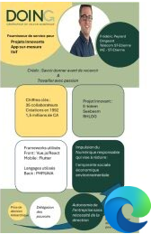
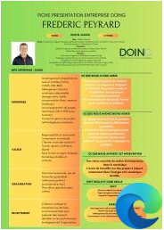

Avant propos
Ce document est un document scolaire. Il n'est pas destiné à être diffusé.
Nous n'avons pas demandé les autorisations d'utiliser les droits d'images, les droits d'auteurs, produits par les différents acteurs (ex. DOING, journaux etc.) par manque de temps, de moyen et de connaissances.
Ce document est un clin à nos professeurs, Ludivine, Ophélie et Nicolas.
Il a pour but de les remercier en mettant en pratique tout ce qu'il nous appris ces quinze derniers jours (et oui, ça n'avait pas l'air mais nous vous avons bien écouté!).
Nous espérons que vous apprécierez l'expérience.
GRAND MERCI A VOUS, LUDIVINE, OPHELIE ET NICOLAS !
PS: Ludivine je t'ai piqué des bouts de code, ne m'en veux pas.
01
DOING
Que propose DOING ?
Partenaire en développement informatique à Saint-Étienne
Solutions digitales sur-mesure éco-responsables
Aller plus loin →02
Frédéric Peyrard
Qui est Frédéric Peyrard ?
Crédo : Savoir donner avant de recevoir.
Travailler avec passion.
Multirécidiviste de l'entrepreneuriat :
E-totem, Seebee community etc.
Aller plus loin →03
Actualité
Les projets de DOING à la une !
Article l'ESSOR
Saint-Étienne, Février 2025. Comment DOING continue de progresser dans le numérique
Aller plus loin →
DOCUMENT A TELECHARGER
Veuillez trouver ci-dessous nos documents à télécharger

version V0

version V3